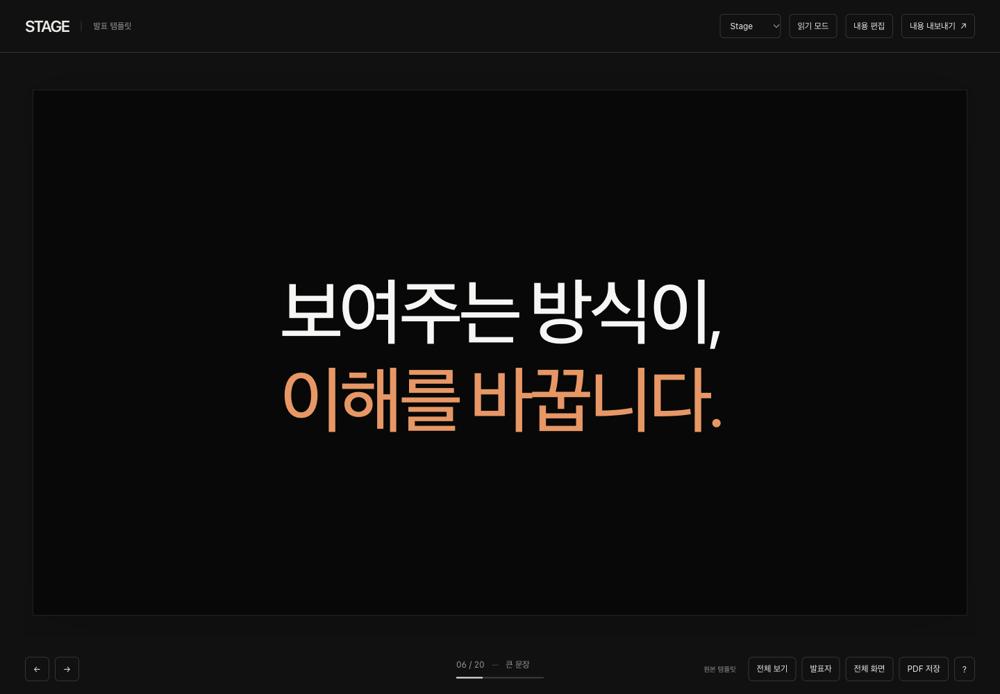
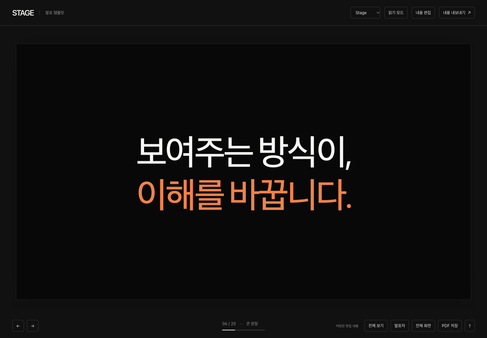

COLOR & MOTION / 2026.10.24
실제 DevDay 발표 장면을 비교해 강조색과 정보 위계를 다듬고, 문장·항목·도표에 맞는 짧은 모션을 적용했습니다.
개선된 발표 보기 ↗아래 장면을 선택하고 슬라이더를 움직여 개선 전후를 비교하세요.


주황색의 선명도를 높이고, 강조할 한 문장에 집중했습니다.
주장·이름·범주·비교 대상에 색을 배정했습니다. 사진과 결과물은 고유한 색을 유지합니다.
라벨·출처·구조선은 중립색으로 정리해, 중요한 대상과 경쟁하지 않게 했습니다.
짧은 전환, 문장 등장, 항목의 순차 등장, 막대 표시를 선택할 수 있습니다.
장면 버튼을 누르면 해당 장으로 이동하며 다시 재생합니다. 시스템에서 모션 줄이기를 선택하면 정적으로 표시합니다.
읽기·편집·전체 보기·발표자 미리보기·PDF에서는 모든 내용을 즉시 표시합니다. 숫자는 모션과 관계없이 최종값으로 유지합니다.